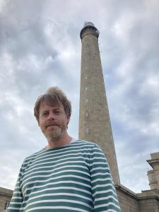

I am a researcher and professor at the École Nationale des Ponts et Chaussées – Institut Polytechnique de Paris (ENPC-IP Paris).
I am a member of the joint project-team Matherials between École Nationale des Ponts et Chaussées and INRIA.
Here is my cv (pdf).
I spent the 2019–2020 academic year in the Department of Mathematics at Imperial College London, in the Abraham de Moivre International Research Laboratory.
I defended my habilitation thesis on 3rd June 2009 (abstract, manuscript). Title: Mathematical and numerical analysis of some models for materials, from the microscopic scale to the macroscopic scale.
During the 2004–2005 academic year, I held a postdoctoral position at the Centre de Recherches Mathématiques at the University of Montreal, in the context of a special year about the Mathematics of Stochastic and Multiscale Modeling.
I defended my PhD thesis on 21st June 2004 (manuscript). Title: Multiscale models for viscoelastic fluids. PhD supervisors: Benjamin Jourdain and Claude Le Bris.
Research interests
- Micro-macro models for viscoelastic fluids (dumbbell model, CONNFFESSIT method, variance reduction methods, entropy estimates).
- Free surface flow and magnetohydrodynamics. Application to the simulation of aluminium electrolysis cells (Arbitrary Lagrangian Eulerian method, moving contact line problem).
- Molecular simulation (molecular dynamics, constrained dynamics, adaptive methods, Quantum Monte Carlo methods, Adaptive Multilevel Splitting, Accelerated Molecular Dynamics).
Lectures and introductory seminars
- Lectures:
- CEMRACS 2008: Multiscale modelling of complex fluids: a mathematical initiation slides, lecture notes.
- École doctorale ECODOQUI 2008: Monte Carlo methods in molecular dynamics slides, lecture notes (in French).
- Workshop Stress tensor effects on fluid mechanics, China, 2010: Multiscale modelling of complex fluids: a mathematical initiation, slides, lecture notes.
- Cornell University: Free energy calculations, slides.
- IPAM tutorial, 2012: Monte Carlo methods in molecular dynamics part 1 part 2.
- ICMS tutorial, 2014: Numerical methods in molecular dynamics, or what is a metastable stochastic process? pdf.
- Computational Toolbox Winterschool 2016, Engelberg: Numerical methods in molecular dynamics, part 1 part 2.
- GDR Egrin, 4ème école, May 2016: Model reduction techniques for stochastic dynamics, pdf.
- RICAM school, December 2016, Linz: SDEs in large dimension and numerical methods, part 1 part 2.
- Brummer & Partners MathDataLab, KTH, January 2021, Sampling problems in computational statistical physics, Free energy adaptive biasing methods (video), Splitting methods for rare event simulations (video), Sampling of metastable dynamics (video).
- Seoul National University, Jump Markov models and transition state theory: the quasi-stationary distribution approach, 25–27 August 2021.
- Introductory seminars (video):
- Horizons Maths 2012, 19th December 2012: Méthodes numériques en dynamique moléculaire (in French).
- Collège de France, 9th January 2015: Processus stochastiques métastables et distributions quasi-stationnaires (in French).
- HIM, 29th January 2015: Optimal scaling for the transient phase of Metropolis Hastings algorithms.
- BIRS, 24th July 2015: Accelerated dynamics.
- Université de Genève, 1st February 2017: Accelerated dynamics and transition state theory.
- ICTS, August 2017: Algorithms for computational statistical physics: a mathematical viewpoint part 1, part 2.
- IPAM, 16th October 2017: Metastability: a journey from stochastic processes to semiclassical analysis.
- Newton Institute, 20th November 2019: Hybrid Monte Carlo methods for sampling probability measures on submanifolds.
- BIRS, 24th November 2020: Effective dynamics for stochastic differential equations.
- CIRM, 28th July 2021: How to compute mean transition times?
- KAUST, 31st May 2023: Unbiased sampling using reversibility checks.
- ELLIS workshop, 22nd June 2023: Finding saddle points of energy landscape: why and how?
- One World Stochastic Numerics and Inverse Problems, 5th June 2024: A spectral approach to the narrow escape in the disk.
- Workshop at the Bernoulli center, 6th November 2025: Gradient flows and adaptive biasing techniques.
Recent events
- Analysis and simulation of metastable systems, CIRM, 3–7 April 2023. Co-organized with Alessandra Bianchi and Claudio Landim.
- MCM 2023, 14th Monte Carlo Methods Conference, Paris, 26–30 June 2023. Co-organized with Stéphanie Allassonnière, Jean-François Chassagneux, Florence Forbes, Emmanuel Gobet, Benjamin Jourdain and Gilles Pagès.
- Programme New trends and applications around generalized Fokker-Planck operators, Bernoulli Center, 16 June–11 July 2025. Co-organized with Omar Mohsen, Francis Nier, and Shu Shen.
- Journée Scientifique de l’Institut Polytechnique de Paris 2025, Telecom Paris, 1st December 2025. Co-organized with Philippe Ciblat, Fabien Leurent, Catherine Lepers, Nathanaëlle Schneider, Marieke Stein, Gauthier Vermandel, with the help of Elise Pallu.
- Workshop Computational methods for probability distributions on manifolds, IHP, Paris, 11–13 May 2026. Co-organized with Kamélia Daudel, Pierre E. Jacob, Christian P. Robert and Gabriel Stoltz.
- Kick-off meeting of the IRP Mathematics, High-Performance Computing and Neural Networks, 9–11 September 2026. Co-organized with C. Chipot.
- CIRM conference Collective variables: mathematical characterization and data-driven discovery, 25–29 January 2027. Co-organized with G. Gottwald, P. Koltai, and S. Winkelmann.
Scientific awards
Editorial activity
- Co-editor-in-chief of ESAIM: Proceedings and Surveys, with Djalil Chafai, Cyril Imbert and Pauline Lafitte, 2012–2020.
- Member of the editorial board of SIAM/ASA Journal of Uncertainty Quantification (JUQ) (2017–2023), IMA Journal of Numerical Analysis (since 2018), Communications in Mathematical Sciences (since 2019), Journal of Computational Physics (since 2019), ESAIM:M2AN (since 2020), Foundations of Computational Mathematics (since 2022).
- Co-editor of the third volume of Transitions, Les Nouvelles annales des Ponts et Chaussées, on “Models and data for the environment”, with David Picard, 2023.
Last update: August 6th, 2026.